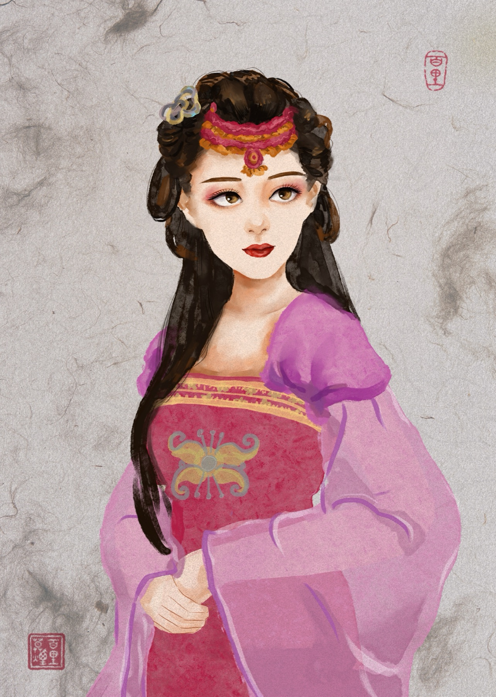
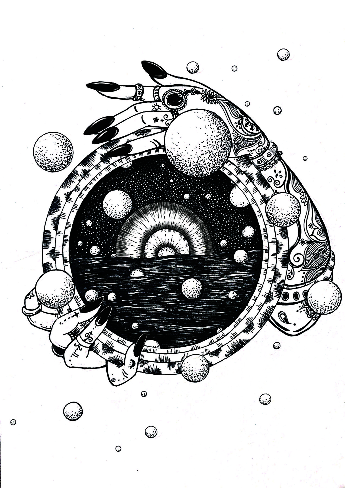

ART GALLERY / DIGITAL ILLUSTRATION
绘画作品
这里按照作品文件夹整理插画：穿搭博主、cp秦唐、追剧、梵文瑜伽内插、黑白创作、豆豆游记绘本、故障艺术。点击任意分类，可以进入对应系列查看完整画面。


FOLDER / 10 WORKS
穿搭博主
以人物造型、服饰姿态和日常风格为主线的插画系列。

FOLDER / 16 WORKS
cp秦唐
围绕秦唐角色关系展开的日常、约会、节日与剧情画面。

FOLDER / 10 WORKS
追剧
从影视角色与古装人物获得灵感的追剧人物插画。

FOLDER / 12 WORKS
梵文瑜伽内插
围绕瑜伽、梵文、体式、数字、身体部位和唱颂主题展开的书籍内插。

FOLDER / 4 WORKS
黑白创作
以黑白关系、线条和人物气质为核心的单色插画创作。

FOLDER / 21 WORKS
豆豆游记绘本
一组带有绘本叙事感的旅行画面，记录豆豆在路上的故事与风景。

FOLDER / 18 WORKS
故障艺术
用数字噪点、跳色和记忆碎片重写人物、风景、日常器物与故乡片段。